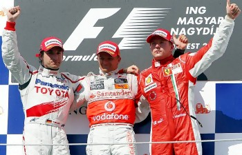

| AKTUELL IN
UNGARN |
| |
|
|
| |
| |
|
|
| |
| |
 |
| |
| |
|
| Formel 1 am Hungaroring in
Mogyoród bei Budapest |
|
Der
Hungaroring befindet sich an
der nordöstlichen Außengrenze der ungarischen Hauptstadt in
der Ortschaft Mogyoród. Das Dorf
liegt direkt
an der Autobahn M3
von Budapest in Richtung
Ukraine, 19
Kilometer entfernt von Budapest,
gemessen vom westlichen Donauufer an der
Kettenbrücke. |
 |
Nach einigen kleineren
Umbauten bekam die Strecke im Jahre 2003 ihre jetzige
Linienführung, nun ist sie 4381 Meter lang. Wegen ihrer engen
Streckenteile und scharfen Kurven ist es schwer, hier zu
überholen, deshalb wird der Hungaroring oft mit dem Stadtkurs in Monaco
verglichen.
|
|
|
Seit
1986 wird der Große Preis von Ungarn in Mogyoród am Stadtrand von Budapest
entschieden. Der
Hungaroring wurde weitgehend nach den Ideen von Niki Lauda mit dem
Motto „safety first“ gebaut. Unter
Fahrern gilt der Hungaroring als die Strecke, auf der bis auf eine
Stelle kurz vor dem Ziel schlecht zu überholen
ist. Der
Streckenverlauf
erfordert die höchste Konzentration der Fahrer und
soll noch
schwieriger sein, als Monte Carlo. Fahrer bezeichnen die
Piste als "Monte Carlo ohne Planken". |
|
Zigarettenwerbung ist in der
EU für den Otto Normalbürger verboten - das
zählte für die Formel 1 lange nicht. Wie
oder
wofür auch immer, die Brüsseler Kommissare machen
schon Ausnahmen.
Abstrus oder korrupt sind sie bestimmt nicht, darauf kannst du schon
wetten! |
|
Die
Tribünen sind in die umliegenden Hügel integriert und
ermöglichen beste
Sicht auf ca. 80% der Rennstrecke, die größte
Sichtweite im Formel-1
Zirkus überhaupt.
Die
Piste in
einer Hügellandschaft der
nördlichen Pusztaausläufe gilt als wellig
und staubig. Bei
Trockenheit besteht Rutschgefahr über den Staub, noch
gefährlicher ist jedoch die schmierige
Fahrbahn bei
einsetzender
Regennässe.
|
|
|
|
Es
gibt kaum eine
Möglichkeit
zur Überholung - und wenn das Wetter mitspielt, wie
fast
immer,
dann beansprucht die sommerliche Hitze die Fahrer
äußerst stark. Ein richtiges
Regenrennen gab es
bisher nur im
Jahre 2006, ein verrücktes Rennen, das Jenson Button in seinem
Honda
für sich entschied, weil sein Team die besten
Wetterpropheten hatte und dreimal richtig zwischen
Normal-,
Regen- und
Intermedialreifen wechselte. |
|
Piste
und Lageplan
der Eintrittskarten |
|
|
|
|
|
Der
Formel-1 Betrieb am Hungaroring begann im Jahre 1986.
Änderungen an der Fahrstrecke in den Jahren 1989 und 2003
zeigen die obigen Lagepläne. Der Hungaroring wird immer öfter
für andere Veranstaltungen mitbenutzt, demnächst ist eine
ganzjährige Nutzung geplant. Die aktuelle Fortentwicklung
begann bereits im Jahre 2016 mit der vollständigen Erneuerung
der Fahrbahn, weitere Fortentwicklungspläne werden demnächst
realisiert.
|
- Gefahren werden 70 Runden = 306,63
km,
- Eine Runde ist 4.381 Meter lang und hat 14 Kurven,
- Der größte Höhenunterschied beträgt 36 Meter,
- Die größte Steigung 6,2%, der Abwärtsgang sinkt mit max. 7%,
- Die Zielgerade ist 789 Meter lang, die Länge der Boxengasse
beträgt 304 Meter,
- Die Strecke zwischen Autobahn M3 und Hungaroring heißt "Bernie
Avenue".
|
Fahrerstrategien:
Ein Überholen ist seit
dem Umbau im Jahre 2003 eher möglich, trotzdem: 14 enge Kurven
und nur
eine 770 Meter lange Gerade machen Überholmanöver
fast unmöglich, zumal
auf 66% der Strecke gebremst wird. Bei meist trockenem Wetter ist die Piste
staubig und rutschig. So wird in den ersten 3-4 Runden zuerst der Staub von
der Piste
bereinigt, danach werden die Runden laufend, bis zu 4 Sekunden
schneller. Die Pit-Stopp-Strategie
hat
einen wesentlichen Anteil am Erfolg. Da man kaum überholt
wird, werden
die
Tanks vor dem Start voll aufgefüllt, damit man mit einer
Füllung
am weitesten kommt und dann seine schnellste Runde drehen
kann,
wenn die
Konkurrenz womöglich schon in der Boxengasse und nicht im Wege
steht.
|
|
|
| |
Den
Hungaroring erreicht man im öffentlichen Verkehr
mit einem
Shuttlebus oder per S-Bahn plus 2 km Fußweg.
Shuttlebus:
Während der Formel-1 Tage fährt ein
Shuttlebus der
Budapester Verkehrsbetriebe
(BKV) kostenlos,
wenn man eine
Eintrittskarte
zum Hungaroring hat. Der Shuttlebus fährt von
Freitag bis Sonntag:
Von der Árpád
Brücke (östliche
Seite) zum
Hungaroring
zwischen 7:30 und 16:00 Uhr - je nach
Stoßzeit - alle 15-30
Minuten
und
zurück vom
Hungaroring zur Árpád
Brücke (östliche Seite) in Budapest
zwischen 11:00 und
19:00 Uhr - je nach
Stoßzeit - alle 5-30
Minuten.
S-Bahn (HÉV):
Örs Vezér tér Platz ist eine
größere Haltestelle bzw. Umsteigestation der
Metrolinie 2. Von hier aus fährt die S-Bahnlinie nach
Gödöllő täglich von 04:30 Uhr
mindestens alle 30 Minuten nach Mogyoród und ebenso
zurück. Von der S-Bahnhaltestelle "Szilasliget" oder "Hungaroring" bis zur Rennstrecke
Hungaroring ist der Fußweg
rd. 2 km lang.
Fährt man in der Stadt vom Ostbahnhof los,
so dauert die beschriebene Fahrt in U- und S-Bahn mit dem
Fußweg zusammen etwa anderthalb bis 2 Stunden lang.
Per PkW:
Die Autobahnabfahrt zum Hungaroring in Mogyoród befindet
sich genau 20 km entfernt von der Kettenbrücke im Zentrum von
Budapest. Die Autobahn M3 Richtung Nyíregyháza
ist bei 18 km zu verlassen, danach die Schilder zum Hungaroring folgen.
|
|
Für
motorisierte Formel-1
Gäste verkehrsgünstig liegen unsere
Ferienapartments:
und
Alle
Unterkünfte in
Budapest
sind erfahrungsgemäß ausgebucht
während der Formel 1 Tage. Wir sind jedoch vor
Ort und auch im
letzten Moment gerne bereit, für Sie eine geeignete Unterkunft
zu
besorgen. |
|
Nur wenige Tage nach dem Formel-1 Rennen findet das
jedes
Jahr auf der Donau-Werftinsel in Óbuda im Nordwesten von
Budapest
statt. Dies ist die größte
Rockveranstaltung in Europa. Für den Besuch
beider Veranstaltungen eignen sich eine Reihe von
in
unserem Angebot. Eine frühzeitige
Reservierung ist
erforderlich, erfahrungsgemäß vergeben wir die
letzten
Apartments etwa einen Monat vor dem Festival. |
 |
| |
|
Formel
1 Terminkalender 2018 |
Termin
|
Großer Preis
|
Ort
|
Zeit (MEZ) |
25.03.
|
Australien |
Melbourne
|
06:00 |
|
08.04. |
Bahrain |
Sachir |
17:00 |
|
15.04. |
China |
Shanghai |
08:00 |
|
29.04. |
Aserbaidschan |
Baku |
15:00 |
|
13.05. |
Spanien |
Barcelona/Katalonien |
14:00 |
|
27.05. |
Monaco |
Monte Carlo |
14:00 |
|
10.06. |
Kanada |
Montreal/Quebec |
20:00 |
|
24.06. |
Frankreich |
Le
Casstellet |
14:00 |
|
01.07. |
Österreich |
Spielberg / Steiermark |
14:00 |
|
08.07. |
Großbritannien |
Silverstone / Northamptonshire |
14:00 |
|
22.07. |
Deutschland |
Hockenheim
/ BWÜ |
14:00 |
|
29.07. |
Ungarn |
Mogyoród
bei Budapest |
14:00 |
|
26.08. |
Belgien |
Spa-Francorchamps
|
14:00 |
|
02.09. |
 Italien
Italien |
Monza / Lombardei |
14:00 |
|
16.09. |
Singapur |
Singapur |
14:00 |
|
30.09. |
Russland |
Sotschi/Krasnodar |
14:00 |
|
07.10. |
Japan |
Suzuka |
07:00 |
|
21.10. |
 USA
USA |
Austin/Texas |
21:00 |
|
28.10. |
Mexiko |
Mexiko Stadt |
20:00 |
11.11.
|
 Brasilien
Brasilien |
Sao Paolo |
17:00 |
25.11.
|
VAEmirate |
Abu Dhabi |
14:00 |
|
| |
| |
| |
|
|
Die
Saison 2018
ist schon zu Weihnachten 2017 spannend geworden mit der
Ankündigung der Veranstalter, indem sie überlegen, die Grid
Girls eventuell nicht mehr zu beschäftigen. Entscheiden mögen sie noch nicht darüber, Hauptsache die
Presse hat was zu schreiben über die Formel 1 während der
Sauregurkenzeit rd. 100 Tage vor dem nächsten Rennen in Australien
- na sowas... |
 |
Die
Saison 2017
gewann Lewis Hamilton viel zu
deutlich. Er
führte schon 5-6 Rennen vor der Finale in Abu Dhabi nur noch
theoretisch einholbar, aber was hätte dann noch die Zuschauer
auf die Tribünen gelockt? Es musste spannend werden, fortan fuhr
nur noch Vettel die
tadellosen Rennen und Hamilton kam nur noch mit Ach und Krach
ins Ziel..., aber auch so kam er mit 46 Punkten Vorsprung auf
die Siegertreppe.
Ein besonderer Höhepunkt
der Saison war die Ankündigung von Niki Laude, dass er aus
Altersgründen seine
Tätigkeit bei Formel 1 nach dem Rennen in Abu Dhabi beende.
Ach wie schade, so dramatisch geht das Jahr 2017 zu
Ende. Nach der Air-Berlin-Pleite meldete im Herbst auch noch die Air-Berlin Tochter NIKI Zahlungsunfähigkeit.
NIKI wurde von Niki Lauda im Jahre 2003 gegründet. Er trat
2011 aus der Firma aus und überlegt nun wieder einzusteigen.
Ein wichtiges Thema für Formel 1 Fans - ein Chapeau!
Wie immer, es gibt viel Spannung und wichtige Entwicklungen im
Formel-1-Zirkus...
|
Die
Saison 2016
begann mit zwei disaströs
verlaufenden Qualifying-Versuchen in Melbourne/Australien und
Sachir/Bahrein. Bereits im dritten Rennen im chinesischen
Schanghai war Formel 1 zum alten Modus zurückgekehrt. Eine
erneute Änderung der Regularien ist noch in dieser Saison zu
erwarten und das finden wir toll! Es gibt endlich etwas
Interessantes im Formel 1 Zirkus, wir haben Streß und warten
gespannt auf die Neuigkeiten.
Ferner
fordern wir weiterhin die Abschaffung der Boxengasse. Aus
langjähriger Beobachtung der Szene wissen wir, dass die Reifen
von Goodyear nicht taugen und deshalb abgeschafft worden sind.
Wer denkt, die Pirellireifen wären besser, der sollte
nachdenken, was für welche Qualität diese Reifen haben, wenn
für die Bewältigung von rd. 150 km zwei bis drei Pirellireifen
benötigt werden. Ein Pfui wegen der Umweltverschmutzung sind
diese Pirellireifen, Finger weg davon!
Wir fordern
schon lange die Abschaffung der farbigen Fahnen, die vor einer
Überhohlung warnen oder diese sogar verbieten. Wer weiß schon,
wieviele Piloten schon auf diese Weise zum Weltmeister
manipuliert worden sind? Auf unsere Zuschauerfrage nach dem
Reifendruck im linken Hinterreifen von Vettels Boliden
bekommen wir schon seit sech Jahren keine Antwort.
|
Die
Saison 2015 endete
...wie
zuvor, mit einem erneuten Sieg des britischen,
nunmehr dreimaligen Weltmeisters Lewis Hamilton und Großmaul
Rosberg durfte schon wieder ein Saison lang jammern und wehklagen
über andere. Da er sich als Deutscher outet, aber mit seiner
deutschen Frau aus Hamburg in Monte Carlo lebt und in
Deutschland nie Steuer zahlt, fragen wir, ob der Jammerkönig
der Formel-1-Scene einen WM-Titel verdiene?
|
10. Juni 2015 - Motorsport-Total.com schreibt:
"Dass die Formel 1 in einer Krise steckt, ist
vor allem im deutschprachigem Raum unübersehbar. 2015 findet
erstmals seit mehr als 50 Jahren in Deutschland kein Formel 1
Rennen statt. Und wer gedacht hat, dass die deutschen Fans
dafür nach Spielberg strömen würden, sieht sich getäuscht. Für
den im vergangenen Jahr ausverkauften Grand Prix von
Österreich sind weniger als zwei Wochen vor dem Rennen noch
reichlich Tickets zu haben."
Wir meinen,
Formel 1 ist ein Ersatzprogramm bei RTL für den amerikanischen
"Ringkampf" Catch, den man in Deutschland nicht mehr verkaufen
sollte. Was sollen denn die Eltern ihren Kindern antworten auf
die Frage: Warum bricht kein Schädel ein, wenn man beim Catch
den Kopf des Gegners in die Eisenstange haut? - oder: Warum
bricht kein Rückgrat, wenn beim Catch der Gegner mit seinen
Schuhen darauf springt?
|
|
|
Wichtige Frage von Bild-Leserin Kerstin Hattendorf am 27. 11.
2014:
"...Ist
denn schon weißer Rauch aus Ecclestones Kamin aufgestiegen? Je
nachdem, ob Ecclestone schon entschieden hat, wer nächstes Jahr
gewinnen darf, wird sicher auch die Liste der Sonderausstattung
entsprechend angepasst. In der Vergangenheit wurde ja gern mit dem
Titel Vettels die Liste dessen länger, was nicht mehr eingebaut
werden durfte." ...und so weiß nun ein jeder, warum ein deutsches
Wunder, die Weltmeister-Maschinerie mit einem Renault Motor in
einem österreichischen Red-Bull-Boliden nicht ewig glänzen
durfte... Es kann doch nicht sein, dass die Kanzlerin ein fünftes
Mal den Schwitzer-Steuersünder Vettel bejubele... Womöglich gab es
einen solchen Kompromiss beim Freispruch von Ecclestone im Januar
2014 im Münchener Prozess?
Bild links:
Ferrari-Spionin auf frischer Tat erwischt von Mercedes
Mitarbeiter. Foto von Miquel Liso, Bildquelle: "Bild" vom 27. 11.
2014 |
Die
Saison 2014 endete
...wie
vielfach erwartet, mit einem erneuten Sieg des britischen,
nunmehr zweimaligen Weltmeisters Lewis Hamilton und Großmaul
Rosberg durfte schon wieder ein Saison lang jammern und wehklagen
über andere. Da er sich als Deutscher outet, aber mit seiner
deutschen Frau aus Hamburg in Monte Carlo lebt und in
Deutschland nie Steuer zahlt, fragen wir, ob der Jammerkönig
der Formel-1-Scene einen WM-Titel verdiene?
|
Die
Saison 2014 begann
...wie
schon lange erwartet, mit dem Abgang von Norbert Haug aus dem Formel-1-Zirkus kam
der Erfolg bei Mercedes zurück. Die ersten fünf Rennen gewann
Mercedes souverän und der vierfache "Weltmeister" Sebastian
Vettel hatte das Nachsehen. Der Spuk mit dem Kinderdoping Red
Bull ist zuerst vorbei. Die Saisoneröffnung
gewann Nico Rosberg, weil sein Teamkollege Lewis Hamilton
ausfiel, aber der Engländer holte auf, Rennen für Rennen
triumphierte er vor Rosberg und malte damit seinem Teamkollegen
seine Grenzen in den Himmel auf. Nach fünf Rennen steht Lewis
Hamilton an erster Stelle der Fahrerwertung vor Großmaul
Rosberg.
|
...und
die Skandälchen häufen sich. Wie
wichtig Bernie Ecclestone für die Formel 1 ist - das könnte sich bald
in München vor Gericht klären, wo er wegen Bestechung und
weiterer kriminellen Ereignisse verantworten muss, die alle in
seinem Sinne ereignet haben sollen, damit er die Formel 1
weiterhin in eigener Hand behalten konnte, als die Bayern LB
im Jahre 2006 die Formel 1 Mehrheit an Bernie übertrug.
Dafür soll Bernie 44 Millionen Dollar Bestechungsgelder an den
Banker Gerhard Gribkowsky überwiesen haben - und das hatte ihm
sogar die Bank als Verkaufsprämie überwiesen. Fortsetzung
folgt.....
|
 |
...nach dem Rennen
bei subtropischen Temperaturen in Hockenheim folgt die nächste Hitzeschlacht in Budapest, wo am Donnerstag
vor dem Rennen 2014 schon vormittags über 30°C im Schatten und
55°C Asphalttemperaturen herrschen. - Am Sonntag gab es
dann pünktlich zum Rennbeginn einen halbstündigen Regen.
Spannend wurde das Rennen durch drei Safety-Car-Phasen nach
den Unfällen von Ericsson, Grosjean und Perez. Die
Himmelspforte drohte danach, ihre Tore erneut zu öffnen,
dazu kam es zwar nicht, aber das sorgte für großen Wirrwarr
bei der Reifenwahl. |
|
|
Der Pechvogel vom
Hungaroring war dieses Jahr Lewis Hamilton, dessen Bolide
während der Qualifikation Feuer fing und deswegen das Rennen
als Letzter aus der Boxengasse begann. Seine ersten Runden
gingen auf die Justierung der Bremssoftware, danach schoss er
sich unnachahmlich bis auf den dritten Podiumsplatz vor.
Behilflich dabei waren die Safety-Car-Phasen und seine
richtige Reifenwahl. Die waren aber schon abgenutzt,
sodass er Alonso nicht mehr überholen konnte und musste sogar Ricciardo mit neuen Reifen vorbeilassen. Nach Montreal siegte zum zweiten Male
in dieser Saison der Red-Bull-Pilot Daniel Ricciardo und
auch Ferrari erwies sich zum ersten Male in dieser Saison
als wettbewerbsfähig. Fernando Alonso wurde Zweiter. |
|
|
Am wichtigsten in der
Boxengasse war erneut der Auftritt von Lothar Matthäus. Marjana, seine dritte Frau
(2003-2009) aus Belgrad/Serbien lernte er kennen während er
der Trainer von Partisan Belgrad war. Marjana spricht Ungarisch
und erleichterte sicherlich seinen Aufenthalt in Budapest in den Jahren 2004 und 2005,
als Lothar Trainer der
ungarischen Nationalmannschaft war. Marjana trug sicherlich
dazu bei, dass Lothar sich in Budapest niederließ.
Nach einem kurzen Ehe-Intermezzo mit der ukrainischen Model
Liliana ist es offensichtlich ernst geworden und Lothar
heiratete im November 2014 zum fünften Male. Dieses Mal die Russin Anastasia Klimko
(Foto links). Lothar
hat nun schon seit über 10 Jahren
seine feste Residenz in Budapest und fühlt sich dort nach
eigenen Angaben pudelwohl. Während man in Deutschland
die Zugereisten kritisiert und über sie pausenlos hin
und her debattiert, haben die Ungarn betuchte Ausländer schon immer
mit offenen Armen empfangen. |
|
|
Schon lange wundern wir
uns, wo die Bilder und Videos von der Szene des Jahres 2012
geblieben sind, als Kanzlerin Angela Merkel zur dritten
Weltmeisterschaft des Steuerflüchtlings Sebastian Vettel
gratulierte. Bilder und Videos davon im Internet wurden vor der Bundestagswahl im September 2013
vorsorglich entfernt, umso mehr
verblüffen uns einige Berichte, wonach Kanzlerin
Merkel im November 2013 zum Saisonabschluss dem
fahnenflüchtigen Steuersünder erneut gratuliert haben soll.
Ohne Bilder kaum zu glauben... |
Die
Gesamtsaison 2013 gewann
- wie erwartet
1. Sebastian
Vettel im Renault für das österreichische Team Toro
Rosso
2. Fernando Alonso im Ferrari für das italienische
Team Ferrari
3. Mark Webber im Renault für das österreichische
Team Toro Rosso
|
Sebastian
Vettel - Von seinem Red Bull hört man reichlich in Presse, Funk
und Fernsehen in Deutschland, nicht jedoch davon, dass sein Bolide ein
französischer Renault ist.
Das darf nicht sein! Damit ist Angela Merkels gelobter Steuersünder
(oder Steuerbetrüger?) zum vierten
Male Weltmeister geworden. Ob er tatsächlich ein so guter
Fahrer ist, darüber zweifeln wir genauso wie bei Michael Schumacher, denn die
weltmeisterlichen Leistungen, geschweige denn seine fahrerischen
Fähigkeiten wir in einem Honda, Toyota oder BMW weiterhin nicht vorstellen
können.
|
 |
Das
Rennen
2013 am Hungaroring
...gewann Lewis
Hamilton (Mercedes) suverän vor Kimi Raikkönen
(Lotus) und Sebastian Vettel (Red Bull Renault). Neid und Trauer sah
man in den Augen von Vettel am Siegerpodest, der allmählich zu
realisieren scheint, dass seine Siegerära mit dem
stärksten Motor dank KERS sichtbar zu Ende geht. Hamilton
siegte bereits in Silverstone und als es darauf ankam, zog der Mercedes
an seiner Getränkewerbung vorbei. Das Rennen brachte erneut
den Beweis dafür, dass die "weltmeisterlichen"
Fähigkeiten von der PS-Zahl und nicht vom Fahrer oder
Automarke abhängig sind. |
|
|
Das
Rennen
2013 am Hungaroring
...war
erneut eine Hitzeschlacht. Um 12 Uhr, zwei Stunden vor Rennbeginn
betrug die Lufttemperatur 33
°C und 48 °C über der Piste.
Die Poleposition sicherte sich in der letzten Runde der Qualifying
Lewis
Hamilton (Mercedes) mit einem Vorprung von nur 38 Tausendstel Sekunde
vor Sebastian Vettel (Red Bull Renault), Romain Grosjean (Lotus), Nico
Rosberg (Mercedes) und Fernando Alonso (Ferrari). |
Stand der Planung am
Nürburgring -
Am 21.07.2013 findet kein Rennen statt. Dieser Termin war
für den Nürburgring geplant, dort werden trotz
andersartiger Nachrichten - wozu auch der Rücktritt des
langjährigen Rheinland-Pfälzischen
Ministerpräsidenten Kurt Beck zählt - erneut Rennen
stattfinden.
Langfristig wird Nürburgring scheinbar doch keine
Pleiteinvestition
werden (Stand: März 2013),
wie die Boulevardpresse im Herbst 2012 viele Monate lang
darüber lästerte.
|
2012
- Kanzlerin Merkel gratuliert
Steuersünder Vettel zur Weltmeisterschaft - und siehe da:
...im
Laufe der Vorbereitungen zur Bundestagswahl 2013 verschwanden die
Bilder mit der Kanzlerin Angela Merkel aus der gesamten freien Presse,
als sie
dem Steuerflüchtling Sebastian Vettel bei
großem Presserummel zur dritten Weltmeisterschaft
gratulierte. Wir haben geschlafen und verfügen nun kein
eigenes Foto vom wichtigsten politischen Ereignis der Formel-1-Saison
2012 - Schade! Trotz Recherche fanden wir Mitte
2013 kein Bild mehr im WWW vom wichtigsten
politischen Ereignis im
Rennsaison 2012, als Kanzlerin Merkel dem Steuersünder
Sebastian
Vettel zur dritten Weltmeisterschaft in Folge gratulierte. Da hat die
gesamte Presse eine starke Wahlhilfe geleistet... Ist denn die
gesamte
Presse so einig oder so
einäugig in einer
Hand?
|
| 2011
traten eine Reihe von
Regeländerungen in Kraft, die wichtigsten sind:
|
- Pro
Team dürfen nur noch 350 Mitarbeiter am Boliden werkeln,
- Pirelli
ist neuer Reifenlieferant,
- Der Doppeldiffusor wird
verboten,
- Das im Jahre 2009 von Red Bull
konkurenzlos eingeführte Energie-Rückgewinnungssystem KERS
wurde 2010 verboten und 2011 erneut zugelassen.
|
Das
Rennen
2011
verlief am Hungaroring
ungewöhnlich. Seit 26 Jahren an
höllische, über 30°C Temperaturen und
Trockenheit gewohnt, erlebten die Piloten zum zweiten Mal nach 2006 ein
Regenrennen, nun bei
Temperaturen um 16°C. 2006 in Honda, diesmal in McLaren
Mercedes gewann Jenson Button beide Regenrennen. 2006
feierte Button seinen ersten Sieg überhaupt.
|
Während
Red Bull Fahrer
Sebastian Vettel die
ersten 8 Rennen der Saison 2011 in Serie gewann, konnte er am Hungaroring dem Sieger
Jenson
Button in McLaren Mercedes
nur noch das Wasser reichen.
Fernando Alonso in Ferrari wurde Dritter vor Lewis
Hamilton
in McLaren Mercedes, der lange als sicherer Sieger aussah,
aber
zwei Fahrerfehler ihn auf den vierten Platz
zurückwarfen. Den Dreher am Ende einer besonders
nassen Kurve in Runde 47 hätte er noch als
Sieger überlebt, aber ein misslungener Reifenwechsel
bescherte ihm eine zusätzliche Boxengassenfahrt mit
rd. 20 Sekunden Zeitverlust und eine weiteren
20 Sekunden Durchfahrtstrafe in Runde 57.
Mit insgesamt 6 Reifenwechsel verzockte er sich den Sieg. |
|
Vettel
verlor nach einer Siegesserie nun das dritte Rennen
hintereinander und die Konkurrenz
beginnt schon zu lästern: Button meint, McLaren Mercedes hat
technisch stark aufgeholt und die Spitze erneut erobert. Gazzeto dello
Sport bemängelt bei Vettel, dass er ein schlechter Verlierer
ist, begreife noch immer nicht, dass seine Zeit abgelaufen
ist und könne dabei seine Enttäuschung kaum noch verbergen.
|
RTL-Wunschkandidat
Vettel ist
"Weltmeister" geworden am 14.11.2010:
Wir
gönnen ihm die Freude, er soll glauben, dass er besser
ist, als andere. Ob Vettels Gesamtsieg eine
Eintagsfliege bleibt, ist hier
keine Frage. Er ist der aktuelle Zuschauermagnet, der
für Einschaltquoten sorgt. Das braucht RTL -
ein deutsches Wunder!
Wir
würden so gerne Vettels weltmeisterliche
Fähigkeiten gegen Ferrari am liebsten in einem Honda
prüfen.
|
"Bild
Zeitung" schreibt am
04.11.2010:
"Ferrari-Schummler
kündigen Stall-Order vor dem
Brasilien-Rennen an" und fragt:
"Wird
es
die verlogenste Titel-Entscheidung aller Zeiten? "
|
Grand Prix
von Korea auf der
neuen Piste in
Yeongam am 24. 10. 2010:
Endlich
einmal ein Rennen,
das durch Können von erfahrenen Piloten und nicht von
stärkeren Motoren entschieden wurde. Ein
Superrennen, das Ex-Weltmeister Fernando Alonso in einem
Ferrari gewann. Teamkollege Massa
fuhr auf den dritten Platz. Ex-Weltmeister
Hamilton belegte den zweiten Platz und der siebenfache Weltmeister
Michael Schuhmacher kam auf den vierten Platz. Zwei Ferrari und zwei
Mercedes landeten auf den ersten vier Plätzen.
Von
den 24 gestarteten
Boliden haben 15 bis zum Ziel ausgehalten.
Weltmeisterschaftsanwärter
Sebastian Vettel flog in der 46. Runde aus dem Rennen, weil er seinen
Motor überforderte. Der Motor von Renault
gab
den Geist nach insgesamt 1.600 km auf. Das ist keine gute Werbung
für Renault!
|
Grand Prix
von Japan in
Suzuka am 10. 10. 2010:
Mit
0,9
Sekunden Vosprung gewinnt Sebastian Vettel das Rennen. Da muss
einer schon blind sein, dem es nicht auffiel, wie Red Bull
Teamkollege und Weltmeisterschaftsanwärter Webber vor dem Ziel
abbremste, damit Vettel als Erster vor ihm ins Ziel kommt.
Ob der deutsche Fernsehsender RTL einen deutschen Sieger
für bessere Einschaltquoten oder die restlichen Rennpisten
eine spannende Weltmeisterschaftstabelle für mehr Zuschauer
nötig
haben? Die
Beantwortung dieser
Frage überlassen wir Ihnen gerne. Beide Faktoren sind
von enormen wirtschaftlichlichen Interessen geprägt.
|
Formel-1
bald ohne Reifen?
Die
Wirtschaftskrise macht auch der Formel 1 zu schaffen.
Nachdem
sich bereits mehrere Hersteller und Sponsoren aus dem Rennen
zurückgezogen haben, erwischt es nun Reifenhersteller
Bridgestone. Die Japaner beliefern seit 1997 die Formel 1 mit
ihren Pneus. Nach dem Ausstieg von Michelin hatte Bridgestone in
den zwei Saisonen 2008 und 2009 das Reifenmonopol.
Nun kündigte Bridgestone an, seinen mit Ende 2010
auslaufenden Zulieferervertrag nicht weiter zu verlängern.
|
Ist
Formel-1 bald am Ende?
Da
ist zwar noch vieles im Nebel, es ist aber schon soviel ausgesickert,
dass ein Scheich im vorderen Orient 20 Boliden mit gleichen technischen
Daten bestellt hatte und diese bereits geliefert worden sein sollen.
Wann und wo der neue
Rennzirkus stattfindet, steht zwar noch im Nebel, aber man kann schon
heute sagen, dass die Rennen mit gleich starken Motoren nur
ehrlicher werden können und der künftige
Weltmeister tatsächlich
der beste Fahrer ist - womöglich, wenn
nicht Boxenstops, gelbe und
blaue Fahnen den Rennablauf bestimmen werden.
|
Das
Rennen
2009 begann nach einer Reihe von Regeländerungen und es wurde
sofort klar, dass diejenigen, die ihre Binsenweisheiten seit vielen
Jahren mit
großer Klappe in die Fernsehkameras streuten, verstummten
womöglich für lange Zeit. Nichts zu hören
war nach zwei
Rennen von den für MacLaren-Mercedes
Verantwortlichen,
allen voran
von Norbert Haug und seinem Weltmeister Hamilton - mit nur einem Punkt
in zwei Rennen befinden sie sich
nur noch unter "ferner liefen". Irgendwas schein da hinter den Kulissen
schon lange zu brodeln, denn ein Weltmeister nach dem anderen
verlässt das Team und alle in einer Phase, als die Techniker
keinen weltmesiterlichen Boliden bereitstellen können - oder
gar
wollen, das munkelt man auch. Nach zwei Rennen hat nun Hamilton die
Nase voll und will weg, wie schon seine Vorgänger
Räikkönen und Alonso in den letzten Jahren. "Lewis
leidet
unter seelischen Höllenqualen bei McLaren-Mercedes", meldet
die Sun, die
englische Parallele zur gutinformierten Bild Zeitung.
|
Auch das Ferrari Team scheint
nach zwei Rennen in der Formel 1-Geschichte in Vergessenheit geraten zu
sein und erlebte mit einem erneuten Nuller in Malaysia ein
weiteres Fiasko.
Die italienische Presse macht dafür den siebenfachen
Weltmeister
Schumacher verantwortlich, der bei den Reifenwechseln unter
allen Rennställen einzig allein alles
verkehrt entschied.
|
Jenson
Button gewann die ersten zwei Rennen der Saison 2009, ein Name,
der Honda zur Aufgabe und Kündigung bei Formel 1
führte.
Nun ist er ein Favorit für den Gesamtsieg geworden und bewies
damit seine Fähigkeiten, die bei Honda nicht zu
tragen kamen -
wir erinnern hier an die Versetzung von Villeneuve aus einem Renault in
ein
Honda, weil er es in der Schumacher
Ära gewagt hatte, über
die
weltmeistermachenden
Aktivitäten am grünen Tisch meckerte - wozu auch die
Verstzung
von Schumacher von Renault in ein Ferrari ebenfalls reichlich beitrug.
|
Zum Saisonende 2008 brodelte die
Gerüchteküche erneut gewaltig und man fragte immer öfter, ob Formel 1
schon am Ende wäre. Anlass dafür gab es eine Reihe, vor
allem weil in
Nordamerika kein Rennen mehr stattfinden soll und es ist auch fraglich, wie
lange noch die in der EU verbotene Zigarettenwerbung auf den Rennpisten
erlaubt bleibt, ohne die das Rennen für alle ein
Verlustgeschäft wäre.
|
Der Rennabbruch als Ferrari im Regenrennen
bei Fuji 2007 die falsche Reifenwahl traf und dadurch schon
nach der ersten Runde als sicherer Verlierer aussah, war
sicherlich eine Entscheidung für den Gesamtsieg für Ferrari.
|
Aus Insiderkreisen sickern immer mehr
Details über die Machenschaften Ferraris heraus. So wunderte
sich Nigel Stepney, der frühere Chefmechaniker von Ferrari
über ein Urteil in einem Interview am 03. Oktobe 2007, als
er bekannt gab, wie er jahrelang mit technischen und
renntaktischen Informationen aus dem McLaren Rennstall
versorgt wurde. Auch die Äußerung von Norbert Haug von
McLaren lässt einiges erahnen. Er findet das Urteil
ungerecht und begründete seine Meinung mit der
gleichzeitiger Spionage von Renault gegen McLaren, wovon die
FIA nicht einmal hören will.
|
Es
ist
schon magisch, wie die "FIA"
und mit welcher Legitimität seit Jahren im Sinne von
RTL-Zuschauermagnet Schumacher und damit konsequent
für
Ferrari Entscheidungen traf. Das ging schon los, als Schumacher
den Briten Daimond Hill von der Piste schubste, dafür in einem
"FIA"-Urteil nicht bestraft und so Weltmeister werden
durfte. Wie oft wurden schon bei Ferrari tiefer als erlaubt montierte
Bodenplatten
entdeckt? - immer ohne Konsequenzen, die die
Anzahl der Weltmeisterschaften von Schumacher hätten
schmälern können.
Die
Spionageaffäre 2007 bekam Ferrari trotzdem zu
spüren und ihre
Siegesserie
brach plötzlich ab, als bei Ferrari
erneut tiefergelegte
Bodenplatten bekannt,
bzw. ausspioniert wurden - und
schon wieder ohne Konsequenzen am grünen Tisch. Warum auch
immer,
hinter dem
vielfachen Weltmeister Schumacher stand schon während seiner
gesamter
Karriere ein Stern mit einem großen
Fragezeichen.
Nach der
Abqualifikation
von Daimond Hill am grünen Tisch folgte die
Geschichte mit Jaques Villeneuve, als Schumacher dem Formel-1-Newcomer
aus Kanada in einem gleichwertigen Boliden von Renault in der
Weltmeisterschaft klar unterlag. Vielleicht damit
es nicht wieder passiert, Villeneuve durfte danach nur noch im
sicheren Looser Honda fahren und Schumacher bekam einen Superschlitten
von Ferrari. So werden bei Formel 1 die Weltmeister am grünen
Tisch
gemacht. - Wie sollte Vielleneuve seinen Weltmeistertitel verteidigen
im Honda? Als
Vielleneuve sich über eine Reihe von
Ungerechtigkeiten hinter
den
Kulissen der Formel-1-Organisation auspacken wollte, bekam er
einen Maulkorb durch die Androhung einer drastischen Geldstrafe und des
Rauswurfs aus dem Formel-1-Zirkus. Er schwieg und hörte
früher auf,
als geplant, womöglich nach einer kräftigen
Abfindung. - Erfolg mit Skrupel
- müsste das Motto bei Formel-1
heißen!
|
|
Siegerpodest
in 2008 von
links:
Zweiter Timo Glock in Toyota,
Sieger
Kovalainen
in Mercedes, Dritter Raikkönen in Ferrari. |
 |
Das Rennen 2007
verlief ungewöhnlich und wurde womöglich vor dem
Rennen am grünen Tisch
entschieden. Alonso - bisher mit 24 Jahren jüngster
Weltmeister -
insgesamt zweimal mit dem Renault-Team in den
Jahren 2005 und
2006. Nach dem Wechsel zu McLaren-Mercedes
erhoffte er die Fortsetzung seiner Erfolge. Doch Newcomer und
Teamkonkurrent Hamilton (nur 22 Jahre alt) kreuzt seine Hoffnungen und
führte vor dem Rennen am Hungaroring in 2007 die Rangliste in
der Fahrerwertung an.
|
Beim
Grand Prix 2007 in Budapest hatte sich die Auseinandersetzung der
beiden Titelkandidaten im Silberpfeil-Cockpit zugespitzt. Alonso hatte
kurz vor dem Ende der Qualifikation mit einem ungewöhnlich
langen
Boxen-Stopp seinen Teamkollegen blockiert. McLaren-intern wurde
Hamilton eine Mitverantwortung gegeben, da er entgegen der Anweisung zu
Beginn des letzten Qualifikationsteils seinen Rivalen nicht
überholen
ließ. Die Formel-1-Juroren
haben Alonso vor
dem
Start von der Pole auf den
sechsten Rang versetzt und das McLaren Team bestraft,
indem die Punkte in den Konstruktions-Punktewertung nicht
mitberechnet werden sollten.
|
Hamilton
siegte zum
dritten Mal in dieser
Saison, dieses Mal vor Raikkönen (Ferrari) und Nick Heidfeld
(BMW), Alonso wurde vierter. Drei Tage nach dem Rennen hat McLaren
gegen die Entscheidung der Rennkommissare Einspruch eingelegt, durch
den die Silberpfeile 15 Punkte in der Teamwertung verloren haben. Damit
muss das Berufungsgericht des Motorsport-Weltverbandes FIA, das am 13.
September auch über die Verwicklungen von McLaren-Mercedes in
die
Spionage-Affäre befindet, über den Fall entscheiden.
Ein Termin für die
weitere Verhandlung steht noch nicht fest.
|
Pressestimmen
zur
Spionagenaffäre -
nach der drastischen "FIA"-Entscheidung am 13. September 2007:
La
Repubblica (Italien): "Schwere Strafe: Die
McLaren-Spione bekommen keinen Konstrukteurs-WM-Titel. Aber das letzte
Wort ist noch nicht gesprochen. Was für ein Chaos für
2008. So wird es
nie enden. Montezemolo ist zufrieden, aber nur teilweise. Das Urteil
lautet: Ihr habt betrogen, also habt ihr keinen Sieg
verdient."
Corriere
della Sera (Italien): "McLaren bestraft, die Piloten sind
gerettet. Das ist eine Justiz mit doppelter Heuchelei! Ein schwarzer
Tag für den Sport und jeden, der glaubt, in der Formel 1 gebe
es noch
eine Ethik. Etwas Schlechteres hätte sich die FIA nicht
ausdenken
können. Man wollte das Image der Formel 1 und die laufende WM
retten,
deshalb hat man nur das Team bestraft. So aber wird keine Gerechtigkeit
erzielt. Diejenigen, die die Formel 1 regieren, denken nur ans
Geld."
The
Telegraph (England): "Hamilton darf weiter von der WM
träumen.
Aber er steckt trotzdem in einem Dilemma. Denn hinter seiner Zukunft
bei McLaren steht ein großes Fragezeichen. Das gilt
für die ganze
Formel 1. Es scheint, als liege der Sport in
Trümmern."
|
2004: Michel Schumacher wurde - sage und schreibe - zum
siebten Male Weltmeister
Als er zum ersten Male Weltmeister wurde, verdankte Schumi
seinen Titel den Änderungen der Rennvorschriften - damals
wurde Boxenstopp zugelassen und darin war sein Team nicht zu
übertreffen. In der Folgezeit nannte man ihn u.a.
"Schummel-Schumi" - was seine Erfolgsserie gut beschreibt -
eine nicht allzu rühmliche Titulierung. Deswegen wollten wir
schon lange seine weltmeisterlichen Fähigkeiten in einem
Honda sehen, aber das hat man uns verwehrt - schade!
|
Aus der Budapester Zeitung vom 28. August 2002:
"Beim Formel-1-Grand-Prix vergangene Woche auf dem Hungaroring
waren auf der Strecke die Verhältnisse klar: Ferrari holte nun
auch den Konstrukteurs-Weltmeistertitel. Doch die Zukunft der
Rennstrecke ist nicht so stabil, wie die sportliche Leistung
der italienischen Rennboliden. Im Vergleich zum
Zuschauerrekord 2001 verbuchte man einen Rückgang von 30
Prozent. Obwohl Bernie Ecclestone mit der Organisation
zufrieden war, bleibt unklar, ob nach 2006 noch
Formel-1-Rennen in Mogyoród gefahren werden.
Bild: Ferrari-Pilot Rubens Barichello (links) gewann den
Großen Preis von Ungarn vor Michael und Ralf Schumacher.
Ferrari-Teamchef Jean Todt (zweiter von links) feierte mit." |
|
Zum 17. Großen Preis von Ungarn am 18. August 2002 pilgerten
70.000 Zuschauer, dies bedeutet einen deutlichen Rückgang im
Vergleich zum mit 100.000 Besuchern ausverkauften Rennen
letztes Jahr. Angesichts des vorzeitigen Titelgewinns durch
Michael Schumacher und der allgemeinen Tourismusflaute war der
schwächere Besucherstrom auch nicht überraschend.
Die
für die Abwicklung des Rennens verantwortliche Hungaroring
Sport Rt. ging auch von weniger Zuschauern als im Vorjahr aus,
doch hoffte man darauf, dass die Einnahmen aus dem
Kartenverkauf, die letztes Jahr drei Milliarden Forint
betrugen, sich in etwa halten lassen. Zwar gibt es noch keine
offiziellen Zahlen, aber dass die Hoffnung von Hungaroring
Sport ein Wunschtraum war, steht jetzt schon fest. Selbst
optimistische Schätzungen gehen von Einnahmeneinbußen beim
Kartenverkauf in Höhe von mehreren hundert Millionen Forint
aus.
|
Mit der Organisation und dem Rennverlauf, bei dem Rubens
Barichello souverän vor Michael Schumacher und Ralf Schumacher
siegte und somit Ferrari zur Konstrukteurs-Weltmeisterschaft
verhalf, zeigten sich die meisten Teams und vor allem auch
Bernie Ecclestone zufrieden. Dieser traf sich am Rande des
Rennens mit dem ungarischen Sportminister György Jánosi, bei
den Verhandlungen ging es allerdings nur um Allgemeines. Über
den kritischen Punkt, dem Abschluss des Vertrags, der dem
Hungaroring die Austragungsrechte für Formel-1-Rennen zwischen
2006 und 2011 sichern würde, wurde nicht gesprochen. Noch vor
zehn Monaten hieß es, Ungarn sei höchst interessiert und
könnte sich als die weltweit erste Rennstrecke die
Formel-1-Austragungsrechte für die Periode von 2006 bis 2011
sichern.
|
Aus ungarischen Zeitungen nach dem Rennen 2002
Nachrichtentitel
- hier die Übersetzungen:
"Keine einzige Überholung, das Rennen wurde beim Boxenstopp
entschieden, manche meinen sogar, von den PR-Werbestrategen
des Formel-1 Zirkus"
"70.000 Zuschauer wissen nicht mehr, was Formel-1 mit Sport zu
tun hat"
"Gänsemarsch im Eiltempo"
"Zukunft des Hungarorings ungewiss - Formel-1-Rennwochenende
mit Millionenverlust"
"Was sieht man im RTL überhaupt?"
Formel 1 wird in Ungarn als die Nachfolgesendung der vielen
CATCH Kämpfe im deutschen TV-Sender RTL betrachtet, deren
Übertragung erst dann eingestellt wurde, als Schüler in den
Grundschulen ihre Lehrer und Eltern bohrend fragten, warum
kein Schädel bricht, wenn beim RTL-CATCH der Kopf des Gegners
in die Eisenstange gehauen wird?
|
Pressemeldungen
vor dem
Hungaroring-Rennen im Jahre 2002:
Dass die Verhandlungen jetzt erst einmal auf Eis gelegt worden
sind, mag auch daran liegen, dass auch Bernie Ecclestone nicht
mehr so sorglos planen kann, wie noch vor einigen Jahren. Denn
die großen Autohersteller haben gedroht, ab 2008 ihre eigene
Rennserie zu starten. Sie wollen, dass die graue Eminenz der
Formel 1 die Verteilung der Formel-1-Profite nach dem Ablauf
des Concorde-Vertrags 2007, der das meiste Geld an Ecclestones
Unternehmen weiterleitet, ändert. Nichts belegt die
Ernsthaftigkeit der Absichten der Autofirmen besser, als
die Gründung einer für die Organisation der neuen Rennserie
verantwortlichen Firma.
|
19. August 2001: Michael
Schumacher hat seinen vierten WM-Titel beim GP von Ungarn 2001
eingefahren: Unser Schumi hat sich endgültig in die
Geschichtsbücher der Formel 1 gefahren. Erstmals seit Alberto
Ascari 1952/53 hat damit ein Ferrari-Pilot seinen WM-Titel
verteidigt. Mit 51 GP-Erfolgen liegt Schumi jetzt gleichauf
mit Rekordsieger Alain Prost. Ferrari ist auch Team-Champion:
Der Doppelsieg in Ungarn hat Ferrari nicht nur die Fahrer-WM
eingebracht. Dank des zweiten Platzes von Rubens Barrichello
sind die Roten auch in der Konstrukteurs-Wertung nicht mehr
einzuholen.
18.
August 2001:
Der
Hungaroring bleibt mindestens bis 2006 im Rennkalender, Bernie
Ecclestone hat den Vertrag mit Hungaroring um fünf Jahre
verlängert.
|
|
Wir fordern Rennen:
|
- ohne Boxengasse,
- kein Nachtanken,
- Katalysatoren für den Umweltschutz,
- keine Anweisung zum Überholen lassen - Abschaffung der
blauen Fahne!
- gleiche Motoren für angeblich weniger gute Fahrer.
|
Nicht Zuschauermagnete, sondern die besseren Fahrer sollen die
Sektflaschen öffnen, aber vor allem:
Der siebenfache "Weltmeister" und RTL-Zuschauermagnet
Schumacher soll seine Formel-1-Tauglichkeit in einem Honda
beweisen! ....In einem Renault triumphierte Newcomer Jacques
Villeneuve über "Weltmeister" Schumacher im Jahre 1997, der
damals in einem gleichwertigen Renault fuhr. Damit so
ein Malheur den RTL-Marlboro Werbeträgern nicht nochmals
passiert, wurde der wahre Weltmeister Villeneuve bei Renault
mit so schlechten Motoren beliefert, dass er erst im 12.
Rennen erstmals über die Ziellinie fahren konnte. Als er dann
zu Honda wechselte und darin seine Chancenlosigkeit gegen
Mercedes und Ferrari sah, beendete er seine Formel-1 Laufbahn.
Wir würden gerne sehen, ob Superstar Schuhmacher in einem
Honda je einen Punkt gegen Ferrari hätte sammeln können!
Aber der Werbesender RTL aus Köln benötigt einen deutschen
Sieger für bessere Einschaltquoten in Deutschland.... |
| |
 |
Bildarchiv |
|
|
|
|
|
|
|
|
|
|
| |
| |
Ungarn-Tourist Team

|
| |
 |
| |
|


 Sie
wollen endlich einmal nach Budapest und suchen eine komfortable
Ferienwohnung, Ferienapartment oder Ferienzimmer,
Sie
wollen endlich einmal nach Budapest und suchen eine komfortable
Ferienwohnung, Ferienapartment oder Ferienzimmer,